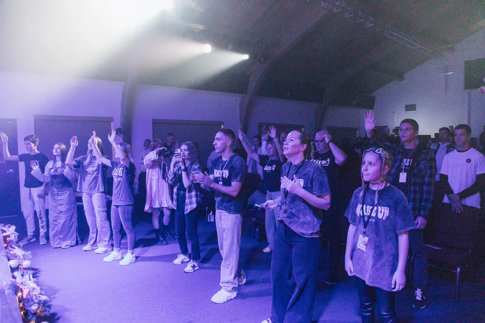

CLA City: proposed visual foundation
The proposal has been approved and applied locally. This sample preserves the previous design for comparison. The proposal uses the existing self-hosted Roboto font, which supports both English and Russian.
Приходите познакомиться с нами
Come get to know us
Мы будем рады познакомиться с вами, ответить на вопросы и помочь освоиться в нашей церкви.
We'd love to meet you, answer your questions, and help you settle into our church.

Приходите познакомиться с нами
Come get to know us
Мы будем рады познакомиться с вами, ответить на вопросы и помочь освоиться в нашей церкви.
We'd love to meet you, answer your questions, and help you settle into our church.
Proposed tokens: light backgrounds #ffffff; headings #000000; body #374151; secondary text #4b5563; light borders #e5e7eb. Heading family: Roboto, weight 500. Existing dark sections, image overlays, logos, and white text on dark surfaces remain intact.